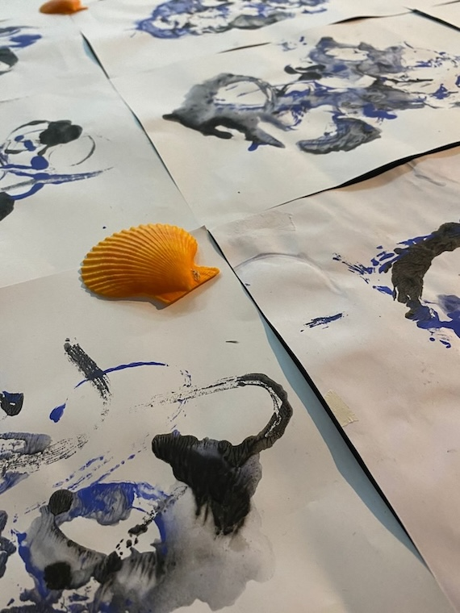
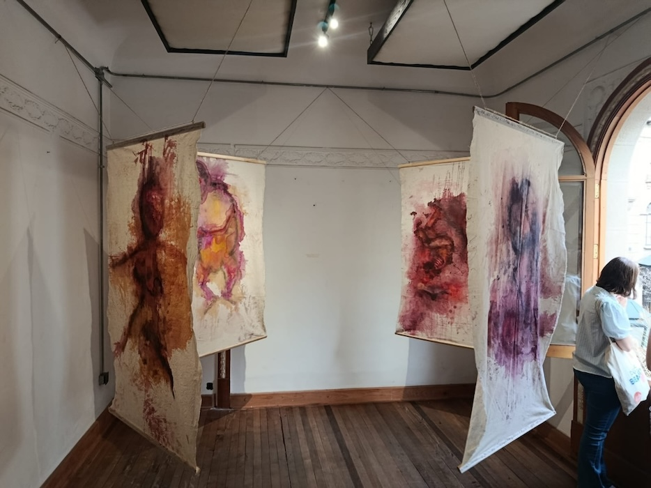
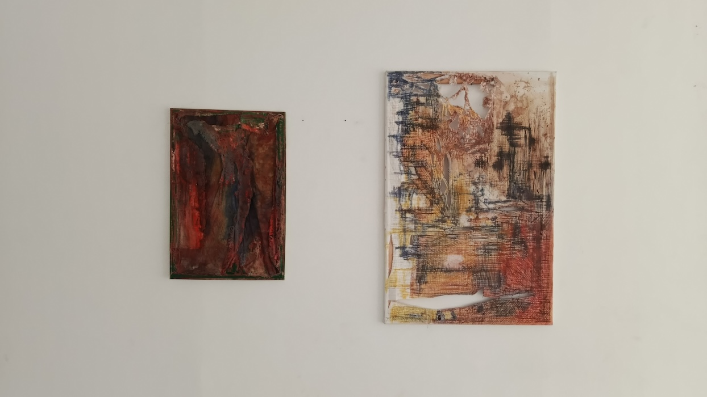

esfuerzo
impresión en acrílico
"pinturas en impresión, que habla del mar, el oceano, del movimiento las olas del mar."
año 2025

Ecos del Silencio
pinturas
pinuras en tela de crea pintada con estractos naturales sobre el aborto inducido, el silencio que se vive entorno a este tema, la muerte de vida en gestación y de como quedan por los diferentes procesos quirurjicos"
año 2025

destrucción, construcción
pinturas
"la vida es un viaje, asi que disfruta del proceso.
De la destrucción y construcción de una pintura hay un desgaste del material, de la tela y una construcción en base a lo que habia y lo que se construyó"
año 2026